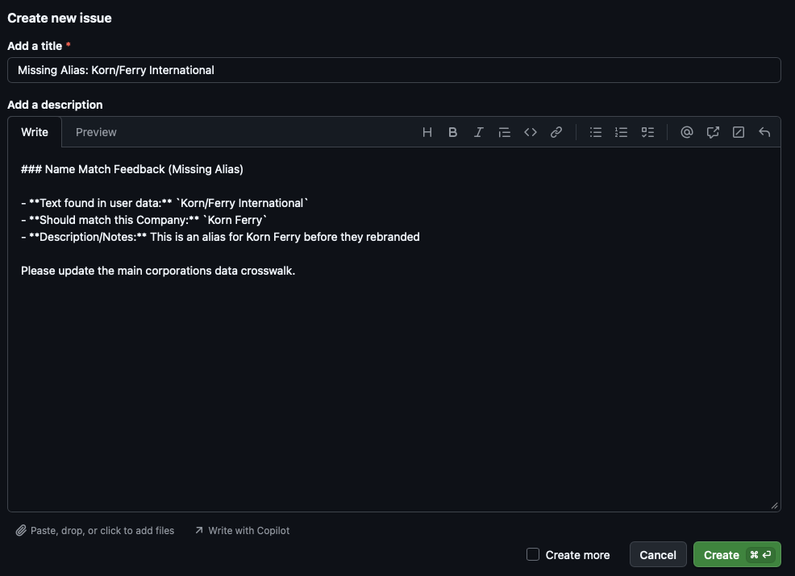

Description
The corporations extract() function is a regular-expression-based pattern match tool to match vector of text with a built-in extensive crosswalk table of corporations using the regextable package as a dependency. The crosswalk table includes companies with a central index key (a unique 10-digit, permanent identification number assigned by the U.S. Securities and Exchange Commission), Compustat (database managed by the S&P Global Market Intelligence), and FDIC-insured companies. The extract() function requires one input
-
input_data: A vector of text to search (typically a data frame with atextcolumn)
For each matching substring, corprations::extract returns
- the row number of
data - the
textcolumn fromdata - the
pattern - the matched substring
- Optionally, other columns in
input_dataor thecorporations_dataor similarity scores iftokenmethod is chosen
Corporations Website
The built in crosswalk of corporations does not provide the full list of aliases that a corporation may have or a certain corporation may not be included at all. In order to help improve the amount of corporations that can match with user text, we ask that users feel free to visit our suggestion website and make suggestions for the crosswalk. This includes adding additional aliases to corporations or providing entirely new ones. Note: package maintainers will need to approve suggestions before adding it to the real database of companies, which may take some time. corporations-website
Text cleaning
Before matching, by default, clean_text() from the regextable is applied to standardize text for better matching in messy text. It converts text to lowercase, removes excess punctuation, replaces line breaks and dashes with spaces, and collapses multiple spaces into a single space. Text cleaning is applied only during matching and does not modify the original input data. Users can disable this behavior by setting do_clean_text = FALSE.
text <- " HELLO---WORLD "
cleaned_text <- regextable::clean_text(text)
print(cleaned_text)
#> [1] "hello world"
extract() function supports two methods of matching:
exact(Default): One to one matching of corporation name strings between the input user data.token: Token based matching with token scoring function that compares words of the string names.
extract() function supports two modes of operation:
match(Default): Direct comparison. Best for short strings or lists of entities where you expect the text to be a company name.search: Deep extraction. Uses an NLP model (UDpipe) to identify Proper Nouns within longer unstructured text (sentences) before running the regex match. NOTE: When using mode = “search”, the package will prompt you to download a ~15MB NLP model on its first run. This model allows the package to “read” the sentence structure.
Extract regex-based matches from text
Optional Parameters
-
col_name: (default"text") Column name in the data frame containing text to search through. -
method: (defaultexact) Use “exact” for one to one match of name strings or “token” for matching based on a token scoring function. -
mode: (defaultmatch) Usematchfor direct matching orsearchfor matching after extraction from longer text. -
data_return_cols: (defaultNULL) Vector of additional columns fromdatato include in the output. -
regex_return_cols: (defaultNULL) Vector of additional columns fromcorporations_datato include in the output (e.g., “FED_RSSD”, “CIK”). -
remove_acronyms: (defaultFALSE) IfTRUE, removes all-uppercase patterns fromregex_table. -
do_clean_text: (defaultTRUE) IfTRUE, cleans text before matching. -
verbose: (defaultTRUE) IfTRUE, displays progress messages. -
unique_match(defaultFALSE) IfTRUE, stops searching after first match to find at most one match per row. -
cl: (defaultNULL) A cluster object or integer specifying child processes for parallel evaluation (ignored on Windows).
Note on token method
When this matching method is selected, matches are filtered using a token verification check. The algorithm identifies “significant” words (ignoring suffixes like “Inc” or “Corp”) and requires at least a 60% overlap between the input text and the corporations data entry to be considered a valid match.
Returns
A data frame with one row per match, including:
-
row_id: the internal row number of the text in the input data - the
col_name(default “text”) column fromdata - Optional columns from the input data (if data_return_cols specified)
- Optional columns from
corporations_data(if regex_return_cols specified) -
pattern: the regex pattern matched -
match: the substring matched in the text -
simililarity: this is the similarity matching score iftokenmethod is selected based on Jaro-Winkler Similarity of the filtered results for ordering purposes
Example data 1
This example is for a basic usage of extract(). Potential entities are already extracted to show matching with listed contributors in Project 2025’s “Mandate for Leadership: The Conservative Promise”. This shows one to one matching of corporations with names that are highly likely to be corporations, rather than semi-structured text.
data("project_2025_coalition_and_contributors")
head(project_2025_coalition_and_contributors)
#> type organization individual role
#> 1 Organization Alabama Policy Institute Advisory Board Member
#> 2 Organization Alliance Defending Freedom Advisory Board Member
#> 3 Organization American Accountability Foundation Advisory Board Member
#> 4 Organization American Center for Law and Justice Advisory Board Member
#> 5 Organization American Compass Advisory Board Member
#> 6 Organization The American Conservative Advisory Board Member
# Temporarily using load() function because real crosswalk is not pushed to Github
load("data-raw/corporations_data.rda")
head(corporations_data)
#> aliases cik FED_RSSD ticker naics
#> 1 Defined Asset Funds Municipal Invt Tr Fd New York Ser 33 3 NA NA
#> 2 Corporate Income Fund Seventy Ninth Short Term Series 13 NA NA
#> 3 Defined Asset Funds Municipal Invt Tr Fd Mon Pymt Ser 155 14 NA NA
#> 4 Defined Asset Funds Municipal Invt Tr Fd Mon Pymt Ser 156 17 NA NA
#> 5 Nuveen Tax Exempt Unit Trust Series 169 National Trust 169 18 NA NA
#> 6 K Tron International Inc 20 NA KTII NABasic usage of extract()
The simplest use of extract() with only the required arguments and specific return columns specified that demonstrate use cases. This finds all matches in the text column using the corporations_data and allows users to directly link company names with unique identifiers, determine which are publicly traded companies, and more. If multiple patterns match the same text, multiple rows are returned, one per match.
# Extract patterns using only required arguments and the default mode = "match"
result <- corporations::extract(
data = project_2025_coalition_and_contributors,
col_name = "organization",
data_return_cols = c("organization"),
regex_return_cols = c("cik", "ticker", "naics")
)
result
#> # A tibble: 7 × 7
#> row_id organization cik ticker naics pattern match
#> <int> <chr> <dbl> <chr> <dbl> <chr> <chr>
#> 1 47 Patrick Henry College 1205813 "" NA "\\b(?:patrick henry college)\\b" Patr…
#> 2 71 Korn Ferry 56679 "KFY" 561311 "\\b(?:korn ferry international|korn ferry)\\b" Korn…
#> 3 73 Taft Stettinius & Hollister LLP 909789 "" NA "\\b(?:taft stettinius & hollister)\\b" Taft…
#> 4 76 Booz Allen Hamilton 13222 "" NA "\\b(?:booz allen & hamilton|booz allen hamilton)\… Booz…
#> 5 78 River Financial Inc. 1641601 "" NA "\\b(?:river financial)\\b" Rive…
#> 6 78 River Financial Inc. 1846407 "" NA "\\b(?:river financial)\\b" Rive…
#> 7 83 Baker Botts, LLP 1127752 "" NA "\\b(?:baker botts)\\b" Bake…Example data 2
For this search mode example, we extract sentences from an excerpt of a house hearing (01/21/2026) named “Embedded Threats: Foreign Ownership, Hidden Hardware, and Licensing Failures in America’s Transportation Systems.” Full transcript link. This data has been pre-processed with each sentence as a row inside the house_hearing_excerpt tibble.
data("house_hearing_excerpt")
head(house_hearing_excerpt)
#> # A tibble: 6 × 1
#> text
#> <chr>
#> 1 China controls 90 percent of the world’s LiDAR market.
#> 2 The Chi- nese entities that are leading this charge are companies like Hesai, RoboSense, DJI that the U.S.
#> 3 Government has already identified as tied to the Chinese military.
#> 4 Those Chinese military-tied companies sell to GM’s Cruise and Nvidia’s Drive Hyperion.
#> 5 Their LiDAR sen- sors have been installed at JFK International Airport and Char- lotte Douglas International Airport.
#> 6 Chinese LiDAR sensors are on intersections in Chattanooga and on drawbridges in Sarasota.
search mode usage of extract()
For search mode, you may add source_text as a column inside the data_return_cols parameter to view the full text in which the entity was extracted from.
# Extract patterns using only required arguments and the default mode = "match"
result <- corporations::extract(
data = house_hearing_excerpt,
col_name = "text",
mode = "search",
data_return_cols = c("text"),
regex_return_cols = c("aliases", "cik", "ticker", "naics")
)
result
#> # A tibble: 19 × 8
#> row_id text aliases cik ticker naics pattern match
#> <int> <chr> <chr> <dbl> <chr> <dbl> <chr> <chr>
#> 1 1 China China Inc 1494562 "" NA "\\b(?:china)\\b" China
#> 2 2 Chi Carnival Homes Inc|Chi Inc 1092155 "" NA "\\b(?:carnival homes|chi)\\b" Chi
#> 3 8 Nvidia Nvidia Corp/Ca|Nvidia Corp 1045810 "NVDA" 334413 "\\b(?:nvidia/ca|nvidia)\\b" Nvidia
#> 4 18 China China Inc 1494562 "" NA "\\b(?:china)\\b" China
#> 5 21 China China Inc 1494562 "" NA "\\b(?:china)\\b" China
#> 6 22 Bei Bei 1360658 "" NA "\\b(?:bei)\\b" Bei
#> 7 22 Bei B.I. Inc 1517758 "" NA "\\b(?:b.i)\\b" Bei
#> 8 24 Washington Washington Corp 314625 "" NA "\\b(?:washington)\\b" Washington
#> 9 25 Washington Washington Corp 314625 "" NA "\\b(?:washington)\\b" Washington
#> 10 27 Washington Washington Corp 314625 "" NA "\\b(?:washington)\\b" Washington
#> 11 28 China China Inc 1494562 "" NA "\\b(?:china)\\b" China
#> 12 31 China China Inc 1494562 "" NA "\\b(?:china)\\b" China
#> 13 33 Washington Washington Corp 314625 "" NA "\\b(?:washington)\\b" Washington
#> 14 35 China China Inc 1494562 "" NA "\\b(?:china)\\b" China
#> 15 37 China China Inc 1494562 "" NA "\\b(?:china)\\b" China
#> 16 38 FedEx Fdx Corp|Fedex Corp 1048911 "FDX" 492110 "\\b(?:fdx|fedex)\\b" FedEx
#> 17 39 Boeing Boeing Co 12927 "BA" 336411 "\\b(?:boeing)\\b" Boeing
#> 18 41 China China Inc 1494562 "" NA "\\b(?:china)\\b" China
#> 19 42 Washington Washington Corp 314625 "" NA "\\b(?:washington)\\b" WashingtonNote: Notice that there are false positive matches due to corporations in the crosswalk that have names of the countries mentioned inside the text data. Potential fixes of this might include gathering contextual data of sentences during future development.
Filtering corporations
The corporations package enables exploration of the corporations crosswalk by limiting your search to specific types of entities (e.g., only publicly traded companies or specific industries). The filter() function allows you to subset the internal crosswalk to specific companies.
Parameters
-
naics_codes: (defaultNULL) Vector of NAICS codes to filter the dictionary. If NULL, all industries are included. -
public_only: (defaultFalse) if TRUE, subsets the dictionary to only include corporations with stock tickers. -
search_term: (defaultNULL) Character string; if provided, filters the company names using a partial string match (case-insensitive). -
corporations_return_cols: (defaultc("aliases", "cik", "FED_RSSD")) Vector of column names to include from the built-in corporations data (e.g., “FED_RSSD”, “CIK”).
# Find public companies in the custom computer programming services sector (NAICS 541511) with stock tickers.
programming_services_public <- filter(naics_codes = c(541511), public_only = TRUE)
head(programming_services_public)
#> aliases cik FED_RSSD ticker naics
#> 161 Analysts International Corp 6292 NA ANLY 541511
#> 2638 Tsr Inc 98338 NA TSRI 541511
#> 658841 Glimpse Group, Inc.|Glimpse Group Inc(The) 1854445 NA VRAR 541511
#> 669824 Ci&T Inc 1868995 NA CINT 541511
#> 744508 Evolving Systems Inc|Symbolic Logic, Inc. 1052054 NA EVOL 541511
#> 745780 Infosys Ltd|Infosys Technologies Ltd 1067491 NA INFY 541511Reporting matching issues
The report_fix() function allows users to flag incorrect name matches or suggest missing aliases through a GitHub issue that is automatically formatted and prompts the user for questions regarding the report. However, we highly suggest to do this kind of suggestion on the corporations-website for a more smoother experience. In addition, you will need a GitHub account to use this reporting method.
Parameters
-
results: The tibble returned from the extract() function
Example of automatically formatted GitHub issue after running report_fix()
